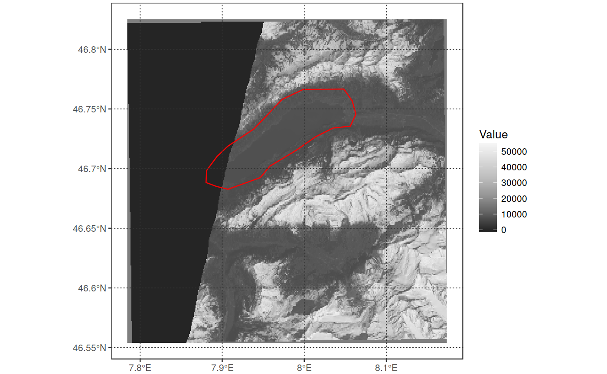
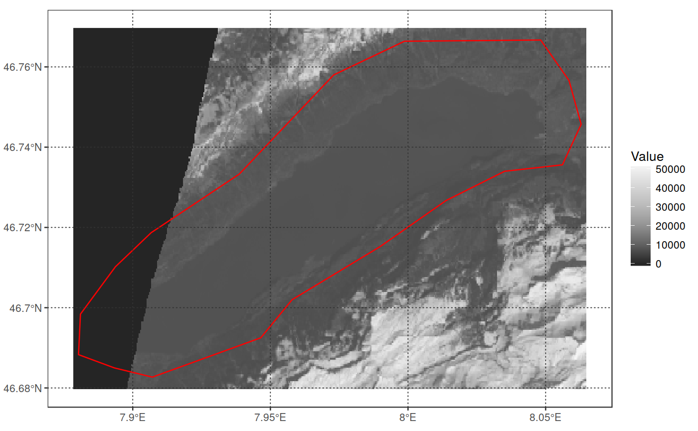

FUNCTION_DESCRIPTION
reproj_rast(in_object, outproj_object, out_res = NULL, crop = FALSE, pix_buff = 5, resamp_meth = "near", out_type = "rastobject", out_format = "GTiff", compression = "LZW", out_filename = NULL, warp_args = NULL, overwrite = FALSE, verbose = TRUE, ...)
| in_object | PARAM_DESCRIPTION |
|---|---|
| outproj_object | PARAM_DESCRIPTION |
| out_res | PARAM_DESCRIPTION |
| crop | PARAM_DESCRIPTION, Default: NULL |
| pix_buff | PARAM_DESCRIPTION, Default: NULL |
| resamp_meth | PARAM_DESCRIPTION, Default: 'near' |
| out_type | PARAM_DESCRIPTION, Default: 'rastobject' |
| out_format | PARAM_DESCRIPTION, Default: 'Gtiff' |
| compression | PARAM_DESCRIPTION, Default: 'LZW' |
| out_filename | PARAM_DESCRIPTION, Default: NULL |
| warp_args | PARAM_DESCRIPTION, Default: FALSE |
| overwrite | PARAM_DESCRIPTION, Default: FALSE |
| verbose | PARAM_DESCRIPTION, Default: TRUE |
| ... | PARAM_DESCRIPTION |
OUTPUT_DESCRIPTION
DETAILS
# reproject a raster based on an output proj4string in_file <- system.file("extdata/OLI_test", "oli_multi_1000_b2.tif", package = "sprawl.data") out_proj <- "+init=epsg:3035" reproj_rast(in_file, out_proj)#>#> class : RasterLayer #> dimensions : 1006, 993, 998958 (nrow, ncol, ncell) #> resolution : 30.02464, 30.02464 (x, y) #> extent : 4151395, 4181210, 2606588, 2636793 (xmin, xmax, ymin, ymax) #> coord. ref. : +proj=laea +lat_0=52 +lon_0=10 +x_0=4321000 +y_0=3210000 +ellps=GRS80 +towgs84=0,0,0,0,0,0,0 +units=m +no_defs #> data source : /tmp/Rtmpv3iV0o/file106d410a1ed6.tif #> names : oli_multi_1000_b2 #># reproject on projection of a different spatial object/file in_rast <- read_rast(in_file) my_vect <- get(load(system.file("extdata", "Lake.RData", package = "sprawl.data"))) out_rep <- reproj_rast(in_rast, my_vect)#>plot_rast_gg(out_rep, palette_name = "Greys", scalebar = FALSE, direction = -1) + geom_sf(data = my_vect, fill = "transparent", color = "red")# reproject on projection of a different spatial object/file and crop on # its extent out_cropped <- reproj_rast(in_rast, my_vect, crop = TRUE)#>#>plot_rast_gg(out_cropped, scalebar = F, palette_name = "Greys", direction = -1) + geom_sf(data = my_vect, fill = "transparent", color = "red")